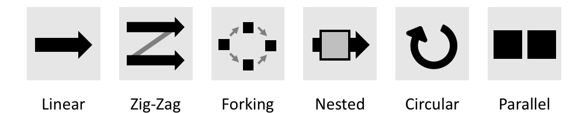

Paper Alert: this is now published in PLOS Computational Biology!
How to… Graphical Abstacts 2
In Graphical Abstracts 1 I outlined where you can find tools, icons, pictograms and simple charts for you Graphical Abstracts. In the next step, the visuals need to be organised into a logical sequence. You therefore need to know your page dimension, decide on a reading direction, and then support the chosen layout with arrows. And at the very end, you can add a little text and colors Graphical Abstracts 3
Page dimension
Layout is defined as the arrangement of parts on an area. What area can you fill? Many times journals request Graphical Abstracts as squares as they are used as thumbnail preview for your article. See for example the landing page of Current Biology:
Note that the image is roughly stamp-size and that the best graphical abstracts should work in this size. When your graphical abstract is a full figure for a paper, poster, or grant, you usually aim for a rectangle-landscape area: this fits much better onto a page and it is also easier to design a reading direction for rectangles. Especially when your space is limited, such as in grant application,s make use of the full-line width to not waste any precious space!
Reading direction
When designing a graphical abstract you have to clearly tell your audiences where they should start reading. We read text and also all visuals from left to right, unless prompted otherwise by color, arreows, size of image etc.
Which reading direction you chose depends on your message: if you talk about a linear processes with clear beginning and end, an organization from left to right is suitable as time is usually shown this way (e.g., as x-axis in line charts). Linear processes could be workflows or experimental pipelines, but also cellular processes such as embryo development, cell differentiation, or disease progression. If you instead talk about cyclic events, such as daily or annual recurrences, metabolic cycles, or also cell division, consider using a circular layout. If you just want to make a comparison, before after, on or off, scenario and Zoomed in view, etc, consider a parallel or nested organization.

More about arranging visual elements and reading direction also check out the Nature Methods Point of View article by Bang Wong.
Arrows connect the visuals
Arrows are omnipresent in all explanatory figures. They connect text, pictograms, images, or charts into a sequential narrative or “storyline”. Arrows come in many designs, just arrowheads, lines with a rounded tip or numerous other end-marks, and of course also lines without any marks can be used to guide the view. Depending on the arrow design, it can adopt many different functions: arrows can simply reinforce the layout, or they can highlight an exception from a reading direction. But arrows can also point to strucures or regions, label, indicate movement, or time. An upward arrow for example could mean ‘move up’, ‘increase’ or ‘good’, while a circular arrow could be day, year or life cycle. In addition, many many domains specific meanings exist, e.g. a cornered arrow for transcription start sites in molecular genetics. Importantly, the semantic meaning of an arrow is highly depended on the context in which it is presented. In graphical abstracts we should decide on one meaning for our arrows, and refrain from varying this. When two arrow types are combined in one graphical abstract thy should be visually cleraly distinct and may have to be explicit explained to readers.

More about arrows: The seminal work about semantic meanings of arrows by Barbara Tversky: Tversky, B., Zacks, J., Lee, P., Heiser, J., 2000. Lines, Blobs, Crosses and Arrows: Diagrammatic Communication with Schematic Figures. pp. 221–230. https://doi.org/10.1007/3-540-44590-0_21
and a practical guide to arrows in figure: Wong, B., 2011c. Arrows. Nat. Methods 8, 701–701. https://doi.org/10.1038/nmeth.1676.
Next: Add a little text and colors Graphical Abstracts 3